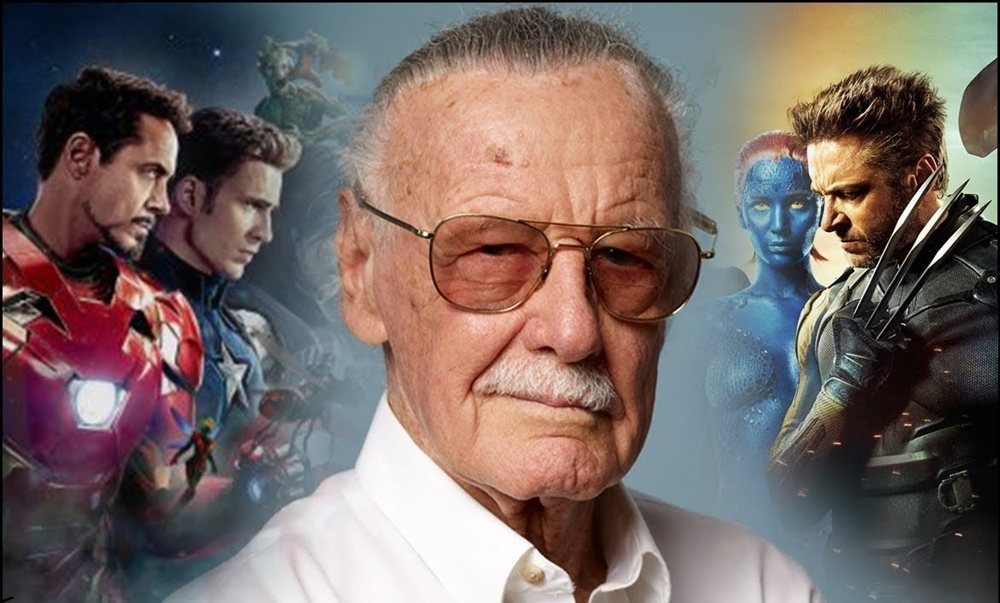

Стэн Ли- был одним из первых и самых плодовитых писателей Marvel. Вместе с такими великими художниками как Джек Кирби и Стив Дитко, Ли создал Железного человека, Халка, Тора, Чёрную вдову, Соколиного глаза, Мстителей, Человека-паука, Ника Фьюри, Щ.И.Т., Сорвиголову, Грута и много других известных персонажей. Он спродюсировал фильмы Железный человек, Невероятный Халк, Железный человек 2, Тор, Первый мститель, Мстители, Железный человек 3, Тор 2: Царство тьмы, Первый мститель: Другая война, Стражи Галактики, Мстители: Эра Альтрона, Человек-муравей.
Первый мститель: Противостояние, Доктор Стрэндж, Стражи Галактики. Часть 2, Человек-паук: Возвращение домой, Тор: Рагнарёк, Чёрная пантера, Мстители: Война бесконечности, Человек-муравей и Оса и Капитан Марвел, а также продюсировал сериалы Агенты Щ.И.Т. , Агент Картер, Сорвиголова, Джессика Джонс, Люк Кейдж и Железный кулак. Стэн Ли сыграл Информатора Наблюдателей в фильмах Железный человек, Невероятный Халк, Железный человек 2, Тор, Первый мститель, Мстители, Железный человек 3, Тор 2: Царство тьмы, Первый мститель: Другая война, Стражи Галактики, Мстители: Эра Альтрона.
Мстители
Оставшиеся в живых члены команды Мстителей и их союзники должны разработать новый план, который поможет противостоять разрушительным действиям могущественного титана Таноса. После наиболее масштабной и трагической битвы в истории они не могут допустить ошибку.
Лига Справедливости
Вдохновившись самопожертвованием Супермена, Брюс Уэйн вновь обретает веру в человечество. Он заручается поддержкой новой союзницы Дианы Принс, чтобы сразиться с еще более могущественным противником. Бэтмен и Чудо-Женщина быстро набирают команду сверхлюдей для борьбы с пробудившейся угрозой. Но, несмотря на уникальный состав отряда супергероев – Бэтмен, Чудо-Женщина, Аквамен, Киборг и Флэш, – быть может, спасать планету от вторжения катастрофических масштабов уже слишком поздно.
Дэдпул
Уэйд Уилсон — наёмник. Будучи побочным продуктом программы вооружённых сил под названием «Оружие X», Уилсон приобрёл невероятную силу, проворство и способность к исцелению. Но страшной ценой: его клеточная структура постоянно меняется, а здравомыслие сомнительно. Всё, чего хочет Уилсон, — держаться на плаву в социальной выгребной яме. Но течение в ней слишком быстрое.
Около 30 лет с названием компании National Allied Publications происходили самые разные трансформации. Некоторое время она была известна как National Comics, а в 1961 году появляется National Periodical Publications. Но все же, несмотря на такие изменения, на всех выпусках комиксов с 1940 года печатался логотип «Superman-DC» от которого в дальнейшем и произошло название бренда «DC Comics».

Суперме́н (англ. Superman; «сверхчеловек») — супергерой комиксов, которые выпускаются компанией DC Comics. Он считается иконой американской культуры. Придуманный писателем Джерри Сигелом и художником Джо Шустером и проданный компании Detective Comics (позднее DC Comics), персонаж впервые появился на страницах Action Comics (июнь 1938-го) а впоследствии появлялся в различных радиопередачах.